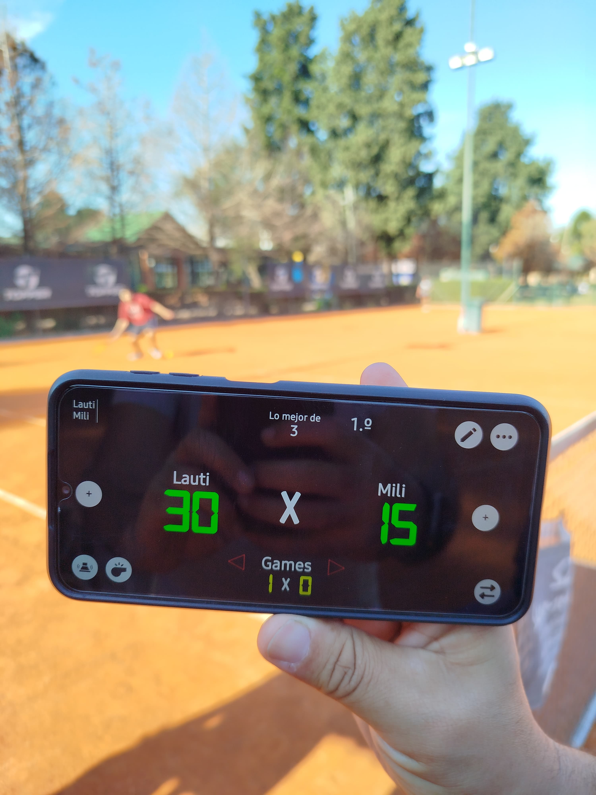

Resultados del Torneo
Podio de Ganadores
2°
1°
3°
Estadísticas Comparativas
Resultados por Jornada
Información de los Participantes
| Nombre | Apellido | Grupo | Carrera | Edad |
|---|
Estadísticas de los Participantes
Distribución por Carrera
Distribución por Edad
Edades por Carrera
Galería del Torneo
Ganador 1° Grupo A
Ganador 1° Grupo B
Ganador 2° Grupo A
Ganador 2° Grupo B
Ganador 3° Grupo A
Ganador 3° Grupo B
Promoción Deportiva
El Deporte en la UNaB
En la Universidad Nacional Guillermo Brown creemos en el deporte como herramienta para el crecimiento personal, la disciplina y la salud física y mental. El torneo de tenis es solo una de las muchas actividades deportivas que organizamos durante el año.
El tenis fortalece habilidades como:
- Concentración y enfoque
- Toma de decisiones bajo presión
- Perseverancia y resiliencia
- Competitividad
¡Anímate a sumarte a las actividades deportivas y a estos torneos internos!

Sobre el Autor

Acerca de este Dashboard
Este dashboard fue desarrollado de forma independiente con el fin de mostrar los resultados del Torneo de Tenis UNaB 2025 de manera interactiva y visualmente atractiva.
Tecnologías utilizadas:
- Python (Pandas, NumPy)
- Plotly para visualizaciones
- HTML5 & CSS3
- JavaScript